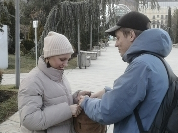

-
Мост Мира
Мост Мира (груз. მშვიდობის ხიდი) — пешеходный мост через реку Куру в Тбилиси, Грузия. Соединяет улицу Ираклия II и парк Рике.Мост имеет 156-метровый стальной каркас, покрытый стеклом. Вся конструкция опирается на 4 опоры. Попасть на мост можно как с улицы Ираклия II и из парка Рике, так и с набережных бульваров.
-
Парк Рике
Парк Рике (груз. რიყის პარკი — пески) — парк в Тбилиси, на левом берегу Куры. С востока парк ограничивают Подъём Бараташвили и Винный подъём.
-
Часовая башня старого Тбилиси
Каждый час в сопровождении музыки, в верхней части башни, под самой крышей, открывается специальная дверка и появляется ангел с золотыми крыльями.
Сайты
-

Грузия
Грузия Тбилиси парк Рике Канатная дорога Парк Рике — Нарикала — одна из трёх канатных дорог в Тбилиси. февраль 2023г.
-
Катенок
парк имени Максима Горького, Ейск, Краснодарский край Задумалась как подольше погулять
-
Пушистик
Шабановское — село в Северском районе Краснодарского края. Административный центр Шабановского сельского поселения.Сбор грибов.
-
Гуамское ущелье
Гуамское ущелье (адыг. Гъуамэ) — узкое глубокое ущелье, в верховьях реки Курджипс. Ущелье расположено между хребтами Гуама и Лаго-Наки, резко обрываясь четырёхсотметровыми скалами к долине реки Курджипс.
Распорядок дня
-
Просыпайтесь в привычное время, устанавливая будильник на утро.
-
После привычных утренних дел включайте ПК и начинайте работать.
-
Если дома находятся люди, создайте себе отдельную рабочую зону.
-
Уделяйте время на короткие перерывы для физических упражнений.
-
Заканчивайте работу в привычное время, придерживаясь графика.
Вопросы по распорядку дня
-
Просыпайтесь в привычное время, устанавливая будильник на утро;
Просыпайтесь, малыши! Вам открыты все пути. Просыпайтесь, малыши! Время — воплощать мечты. Зависит от тебя теперь — Каким он будет, новый день. Звонок. Будильник. Новый день. Пора, малыш! Вставай скорей! Нас ждут великие дела — Ведь солнце светит для тебя! Окно пошире распахни И воздух перемен вдохни. Зарядку сделать не забудь — И с песней начинай свой путь! Просыпайтесь, малыши! Вам открыты все пути. Просыпайтесь, малыши! Время — воплощать мечты. Зависит от тебя теперь — Каким он будет, новый день.
Почистил зубы — причешись! Расправил плечи — улыбнись! Осанка ровная всегда Здоровью твоему нужна. На кухне — каша с молоком Согрета маминым теплом. Ты зарядился. Шаг вперед. И мир открытий тебя ждет! Просыпайтесь, малыши! Вам открыты все пути. Просыпайтесь, малыши! Время — воплощать мечты. Зависит от тебя теперь — Каким он будет, новый день.
-
После привычных утренних дел включайте ПК и начинайте работать;
Вы, возможно, удивитесь, но включить ноутбук можно разными способами. Единственный верный из них — нажатие кнопки включения. Если вы ищете в Сети какой-то альтернативный способ, значит пора нести ноутбук в сервис-центр. Включать ноутбук рекомендуется, только если все компоненты лэптопа корректно установлены и работают, в противном случае велика вероятность, что ноутбук выйдет из строя. Например, неподключенный вентилятор может привести к критическому перегреву процессора.
Рекомендуется поместить ноутбук на плоскую устойчивую рабочую поверхность (стол или специальная подставка), при этом избегайте мягких поверхностей — это может затруднить прохождение воздуха через вентиляционные отверстия, а ведь лэптопу нужно достаточное количество воздуха для собственного охлаждения. Во время работы некоторые части корпуса ноутбука могут значительно нагреваться, и это не всегда следствие неисправности.
-
Если дома находятся люди, создайте себе отдельную рабочую зону;
Психологи и специалисты по управлению временем утверждают, что окружающая нас обстановка напрямую влияет на нашу способность концентрироваться и выполнять задачи. Беспорядок может отвлекать, а неудобное кресло или плохое освещение может утомлять и уменьшать работоспособность. Исследования показали, что обустроенное рабочее пространство способствует увеличению производительности на 20-30%.
Работа из дома может стереть границы между личным и профессиональным. Наличие четко определенного рабочего пространства помогает психологически отделить «время для работы» от «времени для отдыха». Когда рабочий день заканчивается, вы физически покидаете рабочее место, что помогает переключиться. Если же рабочее пространство сливается с домашним, это может привести к переутомлению, стрессу и снижению эффективности. Создание чётких границ между рабочим и домашним пространствами сохраняет рабочую дисциплину, а после рабочего дня позволяет полноценно отдыхать и расслабляться.
-
Уделяйте время на короткие перерывы для физических упражнений;
Повороты головы в сторону Это простое упражнение помогает расслабить шею, избавляет от сонливости и снимает усталость с глаз. 1. Сядьте на край стула, выпрямите спину. Руки поставьте на пояс. 2. Плавно поверните голову вправо. Вернитесь в исходное положение. Затем — поворот влево. 3. Сделайте по 8 поворотов в каждую сторону.
Скручивания вперед Упражнения для борьбы с сутулостью. 1. Сядьте на край стула, ноги поставьте на ширине плеч. 2. Сцепите руки в замок за головой. Локти смотрят в стороны. 3. Наклоните шею и округлите спину. Потянитесь локтями друг к другу. 4. Выпрямите спину и сведите лопатки. 5. Повторяйте упражнение 10-12 раз.
Плечи вверх-вниз Из-за длительного сидения за компьютером часто устают плечи. Вот способ их расслабить: 1. Поднимите плечи вверх. Задержитесь в этом положении на 15 секунд. 2. Опустите плечи вниз. 3. Повторите упражнение 3 раза.
«Далеко-близко» Это упражнение для профилактики близорукости. 1. Подойдите к окну. 2. Вытяните руку перед собой и сфокусируйте взгляд на указательном пальце. 3. А теперь переведите взгляд вдаль. Например, на дом напротив. 4. Повторяйте упражнение 6-8 раз.
Моргание Если проводить за компьютером много времени, может возникнуть сухость в глазах. Чтобы справиться с ней, достаточно быстро поморгать 1-2 минуты.
«Большие глаза» Зрение часто портится из-за перенапряжения. Чтобы расслабить глаза, можно сделать это упражнение: 1. Крепко зажмурьте глаза на 5-7 секунд 2. Широко откройте глаза на 3-5 секунд. 3. Повторите упражнение 6-8 раз.
-
Заканчивайте работу в привычное время, придерживаясь графика.
График работы является обязательным условием для выполнения работы в хорошо организованной манере. Большинство работодателей составляют графики работы, которые направлены на снижение затрат на рабочую силу и получение максимального объема работы, выполненной за отведенное время. Когда вы работаете в срок, график работы является ценной структурой, которая обеспечивает соблюдение срока. Работая каждый день в направлении поставленной цели, проект становится управляемым и более легко достижимым.
Работая в заранее установленное время, вы можете расставить приоритеты в работе, которая должна быть выполнена. В некоторых ситуациях работодатели будут точно указывать, какие задачи необходимо выполнить в течение смены. График работы важен для поддержания баланса между жизнью и работой. Это особенно актуально для тех, кто работает из дома, поскольку зачастую трудно оторваться от работы и сосредоточиться на семье, друзьях и личном времени. Стресс является неизбежной частью работы и жизни. Тем не менее, создание рабочего графика может помочь вам установить четкие временные рамки и позволить вам оставить свою работу на рабочем месте.